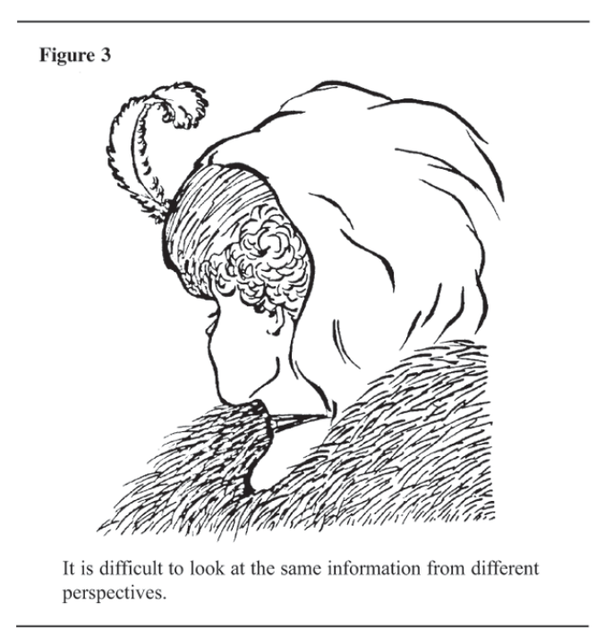

Chapter 2 Perception: Why Can’t We See What Is There To Be Seen?
The process of perception links people to their environment and is critical to accurate understanding of the world about us. Accurate intelligence analysis obviously requires accurate perception. Yet research into human perception demonstrates that the process is beset by many pitfalls. Moreover, the circumstances under which intelligence analysis is conducted are precisely the circumstances in which accurate perception tends to be most difficult. This chapter discusses perception in general, then applies this information to illuminate some of the difficulties of intelligence analysis.19
* * * * * * * * * * * * * * * * * * *
People tend to think of perception as a passive process. We see, hear, smell, taste or feel stimuli that impinge upon our senses. We think that if we are at all objective, we record what is actually there. Yet perception is demonstrably an active rather than a passive process; it constructs rather than records “reality.” Perception implies understanding as well as awareness. It is a process of inference in which people construct their own version of reality on the basis of information provided through the five senses.
As already noted, what people in general and analysts in particular perceive, and how readily they perceive it, are strongly influenced by their past experience, education, cultural values, and role requirements, as well as by the stimuli recorded by their receptor organs.
Many experiments have been conducted to show the extraordinary extent to which the information obtained by an observer depends upon the observer’s own assumptions and preconceptions. For example, when you looked at Figure 1 above, what did you see? Now refer to the footnote for a description of what is actually there.20 Did you perceive Figure 1 correctly? If so, you have exceptional powers of observation, were lucky, or have seen the figure before. This simple experiment demonstrates one of the most fundamental principles concerning perception:

We tend to perceive what we expect to perceive.
A corollary of this principle is that it takes more information, and more unambiguous information, to recognize an unexpected phenomenon than an expected one.
One classic experiment to demonstrate the influence of expectations on perception used playing cards, some of which were gimmicked so the spades were red and the hearts black. Pictures of the cards were flashed briefly on a screen and, needless to say, the test subjects identified the normal cards more quickly and accurately than the anomalous ones. After test subjects became aware of the existence of red spades and black hearts, their performance with the gimmicked cards improved but still did not approach the speed or accuracy with which normal cards could be identified.21 This experiment shows that patterns of expectation become so deeply embedded that they continue to influence perceptions even when people are alerted to and try to take account of the existence of data that do not fit their preconceptions. Trying to be objective does not ensure accurate perception.
The position of the test subject identifying playing cards is analogous to that of the intelligence analyst or government leader trying to make sense of the paper flow that crosses his or her desk. What is actually perceived in that paper flow, as well as how it is interpreted, depends in part, at least, on the analyst’s patterns of expectation. Analysts do not just have expectations about the color of hearts and spades. They have a set of assumptions and expectations about the motivations of people and the processes of government in foreign countries. Events consistent with these expectations are perceived and processed easily, while events that contradict prevailing expectations tend to be ignored or distorted in perception. Of course, this distortion is a subconscious or pre-conscious process, as illustrated by how you presumably ignored the extra words in the triangles in Figure 1.
This tendency of people to perceive what they expect to perceive is more important than any tendency to perceive what they want to perceive. In fact, there may be no real tendency toward wishful thinking. The commonly cited evidence supporting the claim that people tend to perceive what they want to perceive can generally be explained equally well by the expectancy thesis.22
Expectations have many diverse sources, including past experience, professional training, and cultural and organizational norms. All these influences predispose analysts to pay particular attention to certain kinds of information and to organize and interpret this information in certain ways. Perception is also influenced by the context in which it occurs. Different circumstances evoke different sets of expectations. People are more attuned to hearing footsteps behind them when walking in an alley at night than along a city street in daytime, and the meaning attributed to the sound of footsteps will vary under these differing circumstances. A military intelligence analyst may be similarly tuned to perceive indicators of potential conflict.
Patterns of expectations tell analysts, subconsciously, what to look for, what is important, and how to interpret what is seen. These patterns form a mind-set that predisposes analysts to think in certain ways. A mind-set is akin to a screen or lens through which one perceives the world.
There is a tendency to think of a mind-set as something bad, to be avoided. According to this line of argument, one should have an open mind and be influenced only by the facts rather than by preconceived notions! That is an unreachable ideal. There is no such thing as “the facts of the case.” There is only a very selective subset of the overall mass of data to which one has been subjected that one takes as facts and judges to be relevant to the question at issue.
Actually, mind-sets are neither good nor bad; they are unavoidable. People have no conceivable way of coping with the volume of stimuli that impinge upon their senses, or with the volume and complexity of the data they have to analyze, without some kind of simplifying preconceptions about what to expect, what is important, and what is related to what. “There is a grain of truth in the otherwise pernicious maxim that an open mind is an empty mind.”23 Analysts do not achieve objective analysis by avoiding preconceptions; that would be ignorance or self-delusion. Objectivity is achieved by making basic assumptions and reasoning as explicit as possible so that they can be challenged by others and analysts can, themselves, examine their validity.
One of the most important characteristics of mind-sets is:
Mind-sets tend to be quick to form but resistant to change.
Figure 2 illustrates this principle by showing part of a longer series of progressively modified drawings that change almost imperceptibly from a man into a woman.24 The right-hand drawing in the top row, when viewed alone, has equal chances of being perceived as a man or a woman. When test subjects are shown the entire series of drawings one by one, their perception of this intermediate drawing is biased according to which end of the series they started from. Test subjects who start by viewing a picture that is clearly a man are biased in favor of continuing to see a man long after an “objective observer” (for example, an observer who has seen only a single picture) recognizes that the man is now a woman. Similarly, test subjects who start at the woman end of the series are biased in favor of continuing to see a woman. Once an observer has formed an image—that is, once he or she has developed a mind-set or expectation concerning the phenomenon being observed—this conditions future perceptions of that phenomenon.

This is the basis for another general principle of perception:
New information is assimilated to existing images.
This principle explains why gradual, evolutionary change often goes unnoticed. It also explains the phenomenon that an intelligence analyst assigned to work on a topic or country for the first time may generate accurate insights that have been overlooked by experienced analysts who have worked on the same problem for 10 years. A fresh perspective is sometimes useful; past experience can handicap as well as aid analysis. This tendency to assimilate new data into pre-existing images is greater “the more ambiguous the information, the more confident the actor is of the validity of his image, and the greater his commitment to the established view.”25

The drawing in Figure 3 provides the reader an opportunity to test for him or herself the persistence of established images.26 Look at Figure 3. What do you see—an old woman or a young woman? Now look again to see if you can visually and mentally reorganize the data to form a different image—that of a young woman if your original perception was of an old woman, or of the old woman if you first perceived the young one. If necessary, look at the footnote for clues to help you identify the other image.27 Again, this exercise illustrates the principle that mind-sets are quick to form but resistant to change.
When you have seen Figure 3 from both perspectives, try shifting back and forth from one perspective to the other. Do you notice some initial difficulty in making this switch? One of the more difficult mental feats is to take a familiar body of data and reorganize it visually or mentally to perceive it from a different perspective. Yet this is what intelligence analysts are constantly required to do. In order to understand international interactions, analysts must understand the situation as it appears to each of the opposing forces, and constantly shift back and forth from one perspective to the other as they try to fathom how each side interprets an ongoing series of interactions. Trying to perceive an adversary’s interpretations of international events, as well as US interpretations of those same events, is comparable to seeing both the old and young woman in Figure 3. Once events have been perceived one way, there is a natural resistance to other perspectives.
A related point concerns the impact of substandard conditions of perception. The basic principle is:
Initial exposure to blurred or ambiguous stimuli interferes with accurate perception even after more and better information becomes available.
This effect has been demonstrated experimentally by projecting onto a screen pictures of common, everyday subjects such as a dog standing on grass, a fire hydrant, and an aerial view of a highway cloverleaf intersection.28 The initial projection was blurred in varying degrees, and the pictures were then brought into focus slowly to determine at what point test subjects could identify them correctly.
This experiment showed two things. First, those who started viewing the pictures when they were most out of focus had more difficulty identifying them when they became clearer than those who started viewing at a less blurred stage. In other words, the greater the initial blur, the clearer the picture had to be before people could recognize it. Second, the longer people were exposed to a blurred picture, the clearer the picture had to be before they could recognize it.
What happened in this experiment is what presumably happens in real life; despite ambiguous stimuli, people form some sort of tentative hypothesis about what they see. The longer they are exposed to this blurred image, the greater confidence they develop in this initial and perhaps erroneous impression, so the greater the impact this initial impression has on subsequent perceptions. For a time, as the picture becomes clearer, there is no obvious contradiction; the new data are assimilated into the previous image, and the initial interpretation is maintained until the contradiction becomes so obvious that it forces itself upon our consciousness.
The early but incorrect impression tends to persist because the amount of information necessary to invalidate a hypothesis is considerably greater than the amount of information required to make an initial interpretation. The problem is not that there is any inherent difficulty in grasping new perceptions or new ideas, but that established perceptions are so difficult to change. People form impressions on the basis of very little information, but once formed, they do not reject or change them unless they obtain rather solid evidence. Analysts might seek to limit the adverse impact of this tendency by suspending judgment for as long as possible as new information is being received.
Implications for Intelligence Analysis
Comprehending the nature of perception has significant implications for understanding the nature and limitations of intelligence analysis. The circumstances under which accurate perception is most difficult are exactly the circumstances under which intelligence analysis is generally conducted—dealing with highly ambiguous situations on the basis of information that is processed incrementally under pressure for early judgment. This is a recipe for inaccurate perception.
Intelligence seeks to illuminate the unknown. Almost by definition, intelligence analysis deals with highly ambiguous situations. As previously noted, the greater the ambiguity of the stimuli, the greater the impact of expectations and pre-existing images on the perception of that stimuli. Thus, despite maximum striving for objectivity, the intelligence analyst’s own preconceptions are likely to exert a greater impact on the analytical product than in other fields where an analyst is working with less ambiguous and less discordant information.
Moreover, the intelligence analyst is among the first to look at new problems at an early stage when the evidence is very fuzzy indeed. The analyst then follows a problem as additional increments of evidence are received and the picture gradually clarifies—as happened with test subjects in the experiment demonstrating that initial exposure to blurred stimuli interferes with accurate perception even after more and better information becomes available. If the results of this experiment can be generalized to apply to intelligence analysts, the experiment suggests that an analyst who starts observing a potential problem situation at an early and unclear stage is at a disadvantage as compared with others, such as policymakers, whose first exposure may come at a later stage when more and better information is available.
The receipt of information in small increments over time also facilitates assimilation of this information into the analyst’s existing views. No one item of information may be sufficient to prompt the analyst to change a previous view. The cumulative message inherent in many pieces of information may be significant but is attenuated when this information is not examined as a whole. The Intelligence Community’s review of its performance before the 1973 Arab-Israeli War noted:
The problem of incremental analysis—especially as it applies to the current intelligence process—was also at work in the period preceding hostilities. Analysts, according to their own accounts, were often proceeding on the basis of the day’s take, hastily comparing it with material received the previous day. They then produced in ‘assembly line fashion’ items which may have reflected perceptive intuition but which [did not] accrue from a systematic consideration of an accumulated body of integrated evidence.29
And finally, the intelligence analyst operates in an environment that exerts strong pressures for what psychologists call premature closure.
Customer demand for interpretive analysis is greatest within two or three days after an event occurs. The system requires the intelligence analyst to come up with an almost instant diagnosis before sufficient hard information, and the broader background information that may be needed to gain perspective, become available to make possible a well-grounded judgment. This diagnosis can only be based upon the analyst’s preconceptions concerning how and why events normally transpire in a given society.
As time passes and more information is received, a fresh look at all the evidence might suggest a different explanation. Yet, the perception experiments indicate that an early judgment adversely affects the formation of future perceptions. Once an observer thinks he or she knows what is happening, this perception tends to resist change. New data received incrementally can be fit easily into an analyst’s previous image. This perceptual bias is reinforced by organizational pressures favoring consistent interpretation; once the analyst is committed in writing, both the analyst and the organization have a vested interest in maintaining the original assessment.
That intelligence analysts perform as well as they do is testimony to their generally sound judgment, training, and dedication in performing a dauntingly difficult task.
The problems outlined here have implications for the management as well as the conduct of analysis. Given the difficulties inherent in the human processing of complex information, a prudent management system should: